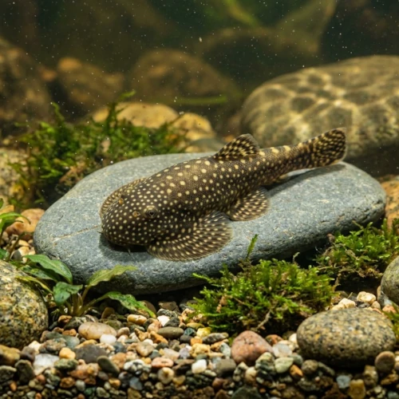

Nome popular principal
Mini Arraia de Bornéu
Mini Arraia de Bornéu, Borneo Sucker, Gastromyzon Ocellatus, Mini Arraia Borneo Sucker
Ficha de peixe
Gastromizontídeos e Limpa-Fundos
Um peixe fascinante com formato anatômico em ventosa que lembra uma arraia, especializado em viver em águas bem oxigenadas e de forte correnteza.

Nome popular principal
Mini Arraia de Bornéu, Borneo Sucker, Gastromyzon Ocellatus, Mini Arraia Borneo Sucker
Nome científico
Nome técnico essencial para taxonomia, cruzamento de manejo e referência editorial consistente.
Dificuldade de manejo
Use este nível como referência inicial, sempre considerando volume, estabilidade e compatibilidade do aquário.
Seção 1
Seção 2
Seções 4 a 6
Mini Arraia de Bornéu tem hábito alimentar herbívoro. Média. 1 a 2 vezes ao dia. Alimenta-se principalmente de biofilme e algas raspadas de pedras lisas, devendo ser suplementado com rações de spirulina e vegetais fatiados.
Fêmeas maduras são ligeiramente mais largas e encorpadas quando vistas de cima do que os machos. Tipo de reprodução: Ovíparo. Dificuldade de reprodução: Avançado. A reprodução em cativeiro é rara e complexa, exigindo simulação rigorosa de corredeiras de água fria e pedras cobertas de algas.
Alta. Substrato recomendado: Pedras lisas de rio, seixos rolados e areia de granulometria fina. Necessidade de esconderijos: Média. Exige aquários no estilo 'hillstream' com iluminação forte para desenvolvimento de algas e pedras arredondadas sem arestas.
Seção 7
Não tolera temperaturas elevadas acima de 26°C por longos períodos nem acúmulo de amônia e nitrito na água.
Seção 8
Não, apesar do corpo achatado em ventosa que lembra uma arraia, trata-se de um peixe da família Gastromyzontidae, parente das bótias.
Sim, necessita de altos níveis de oxigênio dissolvido e correnteza de água vigorosa para simular seu habitat natural de riacho de montanha.
Alimenta-se de biofilme, algas encrostadas em pedras e rações afundantes à base de spirulina e vegetais.